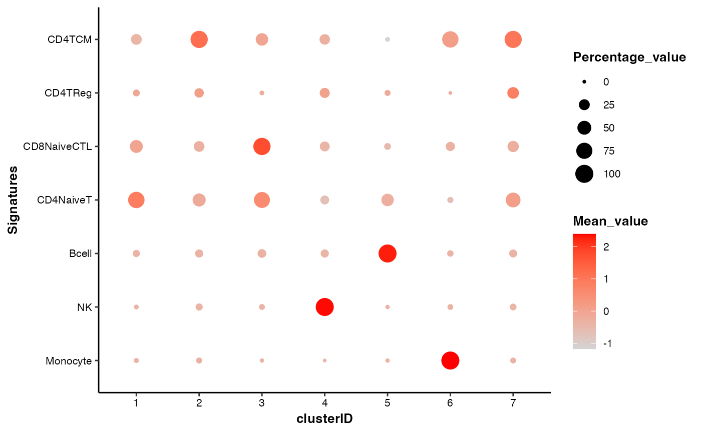

Bubble plot showing the signature scores by self-defined groups
draw_bubbleplot.RdThis function is used to draw a bubble plot of signature scores among self-defined groups.
Usage
draw_bubbleplot(
input_eset,
signature_table = NULL,
group_by = "clusterID",
colors = NULL,
legend.position = "right",
fontsize.legend_title = 10,
fontsize.legend_text = 8,
fontsize.axis_title = 10,
fontsize.axis_text = 8,
xlabel.angle = 0
)Arguments
- input_eset
The expression set object that filtered, normalized and log-transformed
- signature_table
A matrix or data frame containing three columns: signature_name, signature_feature, weight. Default:
NULL.- group_by
Character, name of the column for grouping, usually the column of cell types or clusters. Default: "
clusterID".- colors
A vector of two colors indicating the low and high values respectively. Default: c("
lightgrey", "red").- legend.position
Character, position of legend: "
right" (the default), "left", "top", "bottom" or "none".- fontsize.legend_title
Integer, font size of the legend title. Default: 10.
- fontsize.legend_text
Integer, font size of the legend text. Default: 8.
- fontsize.axis_title
Integer, font size of the axis label and text. Default: 10.
- fontsize.axis_text
Integer, font size of the axis label and text. Default: 8.
- xlabel.angle
Numeric, the angle of the a-axis title. When it's set not 0, the x-axis text will automatically right-justified. Default: 0.
Examples
data(pbmc14k_expression.eset)
signature_table <- read.table(system.file('extdata/demo_pbmc14k/PBMC14k_signatureTable.txt', package = "scMINER"), header = TRUE, sep = "\t", quote = "", stringsAsFactors = FALSE)
head(signature_table)
#> signature_name signature_feature weight
#> 1 Monocyte CD14 1
#> 2 Monocyte LYZ 1
#> 3 Monocyte S100A8 1
#> 4 Monocyte S100A9 1
#> 5 Monocyte S100A12 1
#> 6 NK FCGR3A 1
## 1. the most commonly used command
draw_bubbleplot(input_eset = pbmc14k_expression.eset,
signature_table = signature_table,
group_by = "clusterID")
#> 31 features of 7 signatures were found in the input eset and will be used in calculation.

## 2. customize the colors
draw_bubbleplot(input_eset = pbmc14k_expression.eset,
signature_table = signature_table,
group_by = "clusterID",
colors = c("lightgrey", "red"))
#> 31 features of 7 signatures were found in the input eset and will be used in calculation.